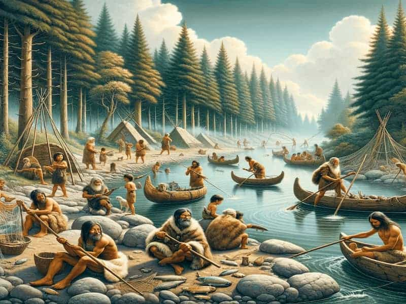

Mesolítico: La Transición

El Mesolítico (del griego "piedra intermedia") representa un período de transición entre el Paleolítico y el Neolítico, aproximadamente entre el 10.000 y el 8.000 a.C. Coincide con el final de la última glaciación y el inicio del Holoceno, con importantes cambios climáticos que afectaron profundamente los modos de vida.
Características principales:
- Adaptación ecológica: Diversificación de recursos debido al cambio climático.
- Tecnología: Microlitismo (herramientas de piedra de pequeño tamaño).
- Economía: Mayor especialización en la caza, pesca y recolección.
- Asentamientos: Semisedentarios, con ocupaciones estacionales.
- Arte: Representaciones más esquemáticas y simbólicas que en el Paleolítico.
Innovaciones del Mesolítico
Durante este período aparecen los primeros indicios de domesticación de animales como el perro, así como nuevas herramientas como el arco y la flecha, que revolucionaron las técnicas de caza.